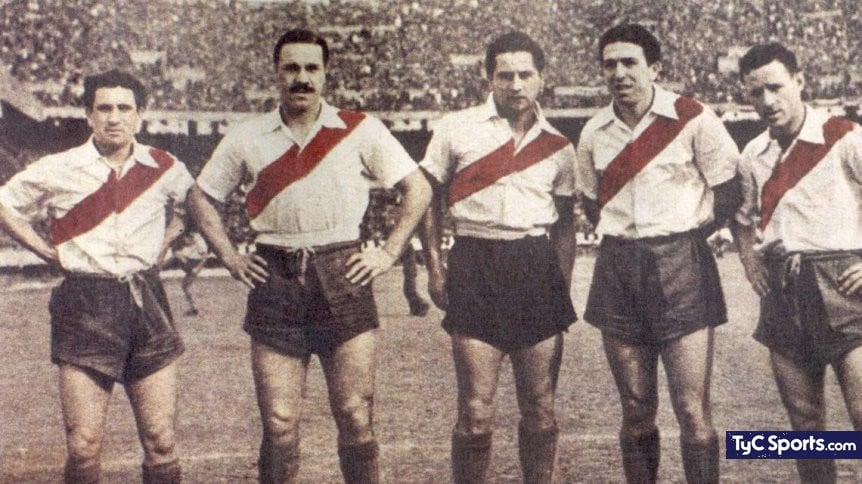
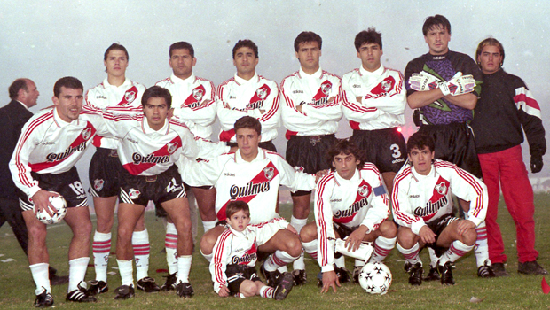
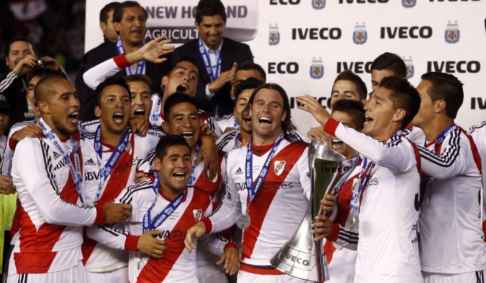
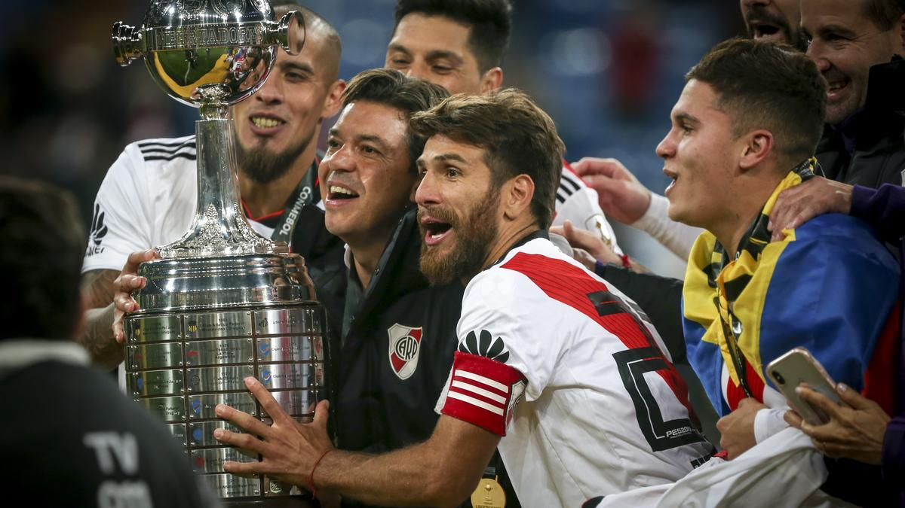

El nacimiento del Club Atlético River Plate en 1901 marcó el inicio de una institución que se convertiría en una de las más grandes de Argentina y el mundo.
1932
Primer Campeonato Profesional
En 1932, River Plate se coronó campeón en el primer torneo profesional de fútbol en Argentina, marcando un hito en la historia del deporte.
1940s
La Máquina
La década de 1940 vio el surgimiento de "La Máquina", uno de los equipos más legendarios de River Plate, liderado por jugadores como Alfredo Di Stéfano y Adolfo Pedernera.

1996
La Copa Libertadores
River Plate ganó su segunda Copa Libertadores en 1996, bajo la dirección de Ramón Díaz y con una actuación estelar de Enzo Francescoli, consolidando su estatus internacional.

2014
El Torneo Final 2014
River Plate ganó el Torneo Final 2014 bajo la dirección de Ramón Díaz, marcando un regreso triunfante a la cima del fútbol argentino.

2014
Marcelo Gallardo se Convierte en Entrenador
En junio de 2014, Marcelo Gallardo fue nombrado como el nuevo director técnico de River Plate, marcando el comienzo de una era que traería un éxito significativo al club.
2015
Copa Libertadores 2015
Bajo la dirección de Gallardo, River Plate ganó su tercera Copa Libertadores en 2015, venciendo a Tigres en la final y consolidando su estatus como uno de los equipos más poderosos de América del Sur.
2018
El Superclásico en la Copa Libertadores
El 2018 presenció uno de los enfrentamientos más épicos entre River Plate y Boca Juniors en la final de la Copa Libertadores, que se jugó en el estadio Santiago Bernabéu en Madrid.

Suscríbete a nuestro newsletter
Para enterarte de todo lo nuevo que pase en el mundo River!
Rumores de transferencias, remodelaciones, precios, cuotas, venta de entradas y mas!!!